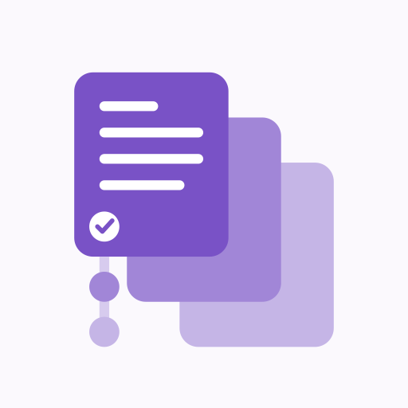

Logo master
Transparent vector with editable color tokens.
SVG · PNGThe approved logo, with stable filenames and exports for the repository, product page, app, and GitHub organization.
Transparent vector with editable color tokens.
SVG · PNG
Opaque square source; preview mask only.
App PNG · App SVG · Web SVG512 × 512 PNG, ready to upload.
Download avatar